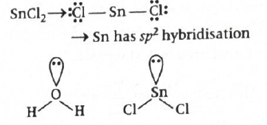
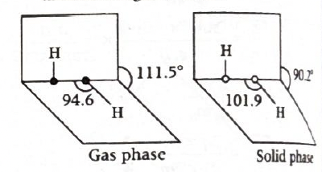
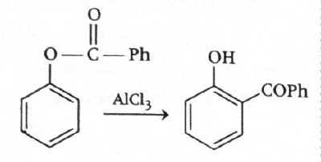
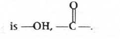
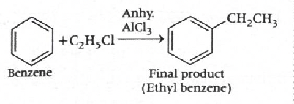
Answer: \((d)\) Trapping of electrons in lattice leads to the formation of F-centres.
Solution:
This question is from crystal defects in ionic solids. To solve it quickly, check each statement using the standard definitions of Frenkel defect, Schottky defect and F-centres.
Statement: Frenkel defect is favoured when the difference between sizes of cation and anion is very small.
This is incorrect.
Frenkel defect is favoured when there is a large difference in the sizes of cation and anion.
Usually, the smaller cation leaves its normal lattice site and occupies an interstitial site.
So Frenkel defect is more common when: \( \text{cation is much smaller than anion} \)
Statement: Frenkel defect is not a dislocation effect.
This is incorrect.
Frenkel defect is a dislocation defect.
In this defect, an ion is displaced from its regular lattice position to an interstitial position.
So the ion is still present in the crystal, but its position changes.
Statement: Schottky defects have no effect on physical properties of solids.
This is incorrect.
Schottky defect does affect physical properties of solids.
Statement: Trapping of electrons in lattice leads to the formation of F-centres.
This is correct.
When an anion is missing from its lattice site, an electron may occupy that vacant site to maintain electrical neutrality.
This electron trapped in an anion vacancy is called an F-centre.
F-centres are responsible for the colour of some ionic crystals.
Therefore:
\(\boxed{(d)}\)
Why this method works:
JEE / NCERT takeaway:
Helpful diagram:
Normal ionic lattice:
+ - + -
- + - +
+ - + -
Frenkel defect:
+ - + -
- + - +
+ - -
+
(small cation leaves lattice site and goes to interstitial site)
F-centre:
+ □ + -
- + - +
+ - + -
\( \square \) = anion vacancy occupied by electron
1-minute solving trick:
More intuitive memory trick:
Common mistakes to avoid:
Chapter / Topic / Subtopic:
Final exam-style answer:
Option \((d)\) is correct.
Trapping of electrons in anion vacancies leads to the formation of F-centres.
Option \((a)\) is incorrect because Frenkel defect is favoured when the size difference between cation and anion is large.
Option \((b)\) is incorrect because Frenkel defect is a dislocation defect.
Option \((c)\) is incorrect because Schottky defect affects physical properties, especially density.
\(\boxed{(d)}\)
Quick cheatsheet:
equal number of cations and anions missing
density decreases
small ion leaves lattice site and occupies interstitial site
large size difference between cation and anion
electron trapped in anion vacancy
maintained
Schottky \(\downarrow\), Frenkel usually unchanged
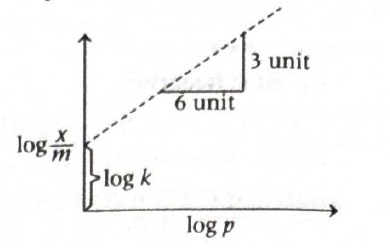
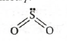
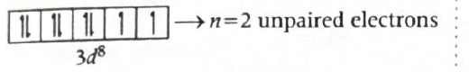
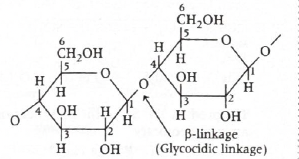
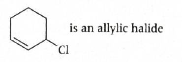
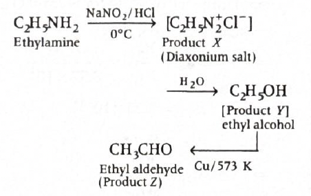
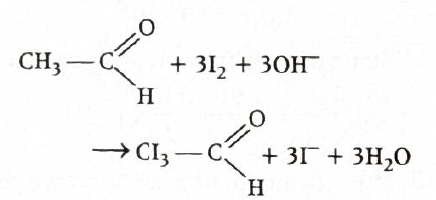
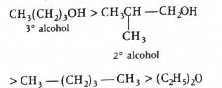
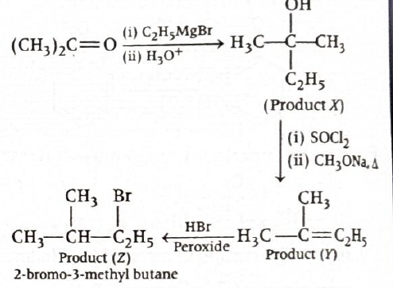